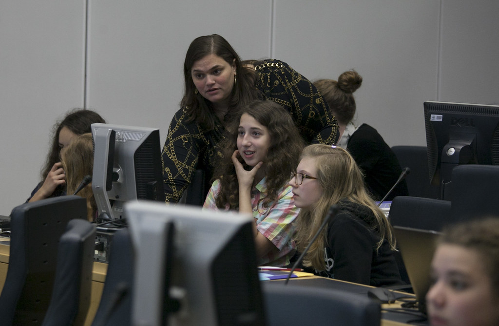
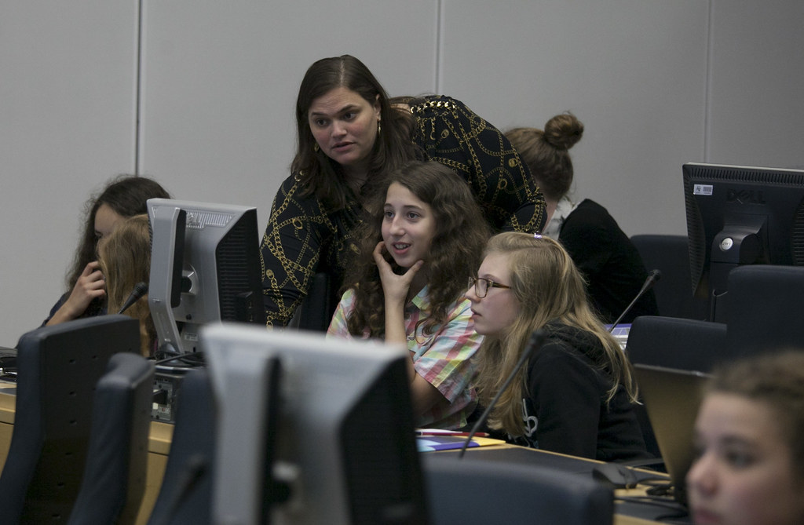
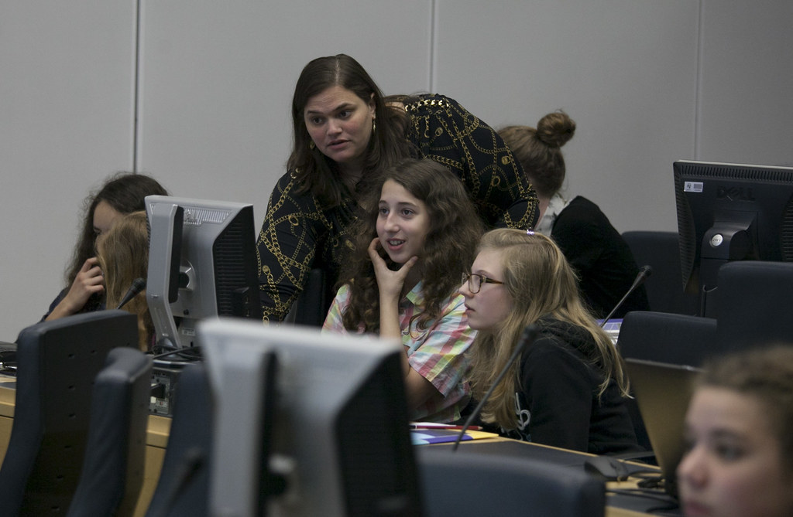
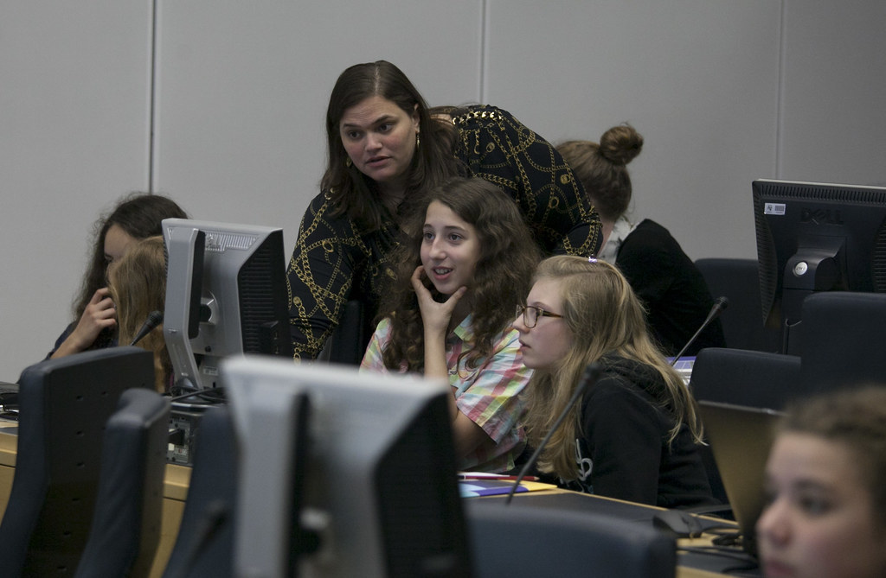

Tjejhack! - Teknikprogrammet
 



Nästa tjejhack är 12-12-2020
Nästa tjejhack är 12-12-2020

Spela snake med piltangenterna. Akta dig så inte spelet hamnar utanför skärmen.
Vill du lära dig mer om programmering? På Youtube kanalen "Fredrik Johansson" finns det hundratals lärorika vidoer för att komma igång med ditt programmerande. Du kan även välja att gå på teknikproggrammet om några år. (Valfri marknadsföring)
Tjejhack Ronneby genomfördes första gången våren 2018 för alla tjejer som går årskurs sju på skolorna i Ronneby kommun. Det är elever som går Teknikprogrammet på Gymnasieskolan Knut Hahn som arrangerar tjejhacket. Syftet är att tjejer i lugn och ro ska få prova på att programmera. Planen är att tjejhack ska bli något vi genomför varje år.
2018: 120 deltagare, 4 st mentorer, 2 st lärare
2019: Första tjejhacket kommer att genomföras 29/5 med tjejerna i årskurs 7 på Snäckebackskolan. Förutom tjejhack kommer även en workshop om programmering med python att genomföras på Listerbyskolan (årskurs 4-6).
2020: Ingen tjejhack genomfört än.
För mer information
kontakta oss på asdl@ronneby.se
eller ring 090981397